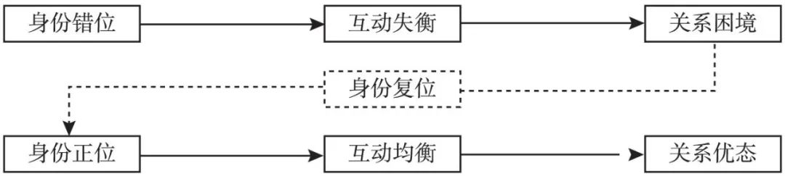

收录于合集
简
刘乐
**
**
中国人民大学国际关系学院博士研究生，康奈尔大学政府系访问学者。
【 摘要 】关系具有正负两面性。其中，关系的负面性是指行为体在关系联结与互动过程中所承担的风险和付出的代价。关注关系的负面性，有助于我们理解行为体之间相互弱化彼此身份认知的消极互动: 关系的负面效应催生特定身份与其反向身份之间产生角色规范不协调与行为预期不匹配的身份错位，进而引发彼此在不一致方向上高强度往来的互动失衡，最终使得互动双方围绕不对称关系的疏密程度而陷入强权方担心“被牵连—被离心”、弱权方忧虑“被束缚—被抛弃”的关系困境。美国和巴基斯坦对于两国不对称反恐联盟在“议题伙伴”与“安全盟友”之间的身份错位引发双方在充分行动配合与实质安全合作之间的互动失衡并最终使得美巴双边安全关系陷入疏密失宜的两难困境就是一个例证。鉴于此，行为体之间的身份互动应该根据双方共有的关系基础而确立适宜的交往边界并保持恰切的关系距离，以期缓解关系的负面效应。
关系 是 指已经建立起空间或社会定位的动物在一段时期内行为连贯和重复关联的现象。 囿于社会科学中的“关系乐观主义”，既有的关系研究往往倾向于集中关注关系的正面性( 即行为体在关系联结与互动过程中的保险和收益)，而在一定程度上漠视了关系的负面性( 即行为体在关系联结与互动过程中的风险和代价)，最终导致我们在对关系这一中性概念的认识过程中出现了明显的理论盲区。与此同时，学界的身份研究往往主要围绕行为体之间相互强化彼此身份认知的积极互动展开，例如敌人间的持续冲突与朋友间的稳定合作，但是对于敌意的消弭与善意的式微等身份间消极互动及其机制的考察则相对不足。 本文的研究重点 即 探讨在关系负面效应的作用下身份间的消极互动。 在文章的结构安排上，首先是对相关的既有研究进行概要回顾，接着在此基础上提出一个关于身份间消极互动的分析框架，然后运用这一分析框架来考察美巴不对称反恐联盟的发展与困境，最后是反思和结论。
身份认知、关系两面性与不对称互动
身份间的消极互动 是指行为体之间相互弱化彼此身份认知的过程和状态。 鉴于对称互动的稀缺性和均衡性，社会生活中关系的负面效应与身份间消极互动多呈现为不对称互动。因此，为了讨论身份间的消极互动就需要先对身份认知、关系两面性、不对称互动等相关概念的既有研究进行梳理和评述。
( 一) 身份认知
在身份研究的理论脉络上， 主要分为两条基本的研究路径:( 1) 结构理论把身份当作一个原因变量，分析在特定身份基础上的社会互动及其产生的社会结果。因此，这一视角下的身份是外生给定的，主要研究不同身份的分类和界别、功能和作用、意义和影响。( 2) 过程理论则把身份当作一个结果因素，分析某种特定身份的产生、习得及其动力和机制。① 因此，这一视角下的身份是内生互动的，主要研究不同身份的习得和抛弃、竞争和采择、演化和嬗变。
在纵向上，身份认知包括循次渐进的角色期待与行为预期。 首先，角色赋予身份以意义，身份通过角色来实现。也就是说，角色是身份的外在反映和表现形式，身份是角色的内在构成和本质内容。② 其次，身份对行为的作用表现为身份影响偏好、偏好界定利益、利益决定行为。最后，角色是社会对个体以及个体对自身相关行为的期望系统。③ 因此，从历时的角度来看，身份认知就包括行为体对某种特定身份进行何种角色扮演的认识和理解以及在此基础上关于这一身份所对应社会行为的预设和期望，即“身份→角色→行为”的逻辑链条。
在横向上，身份认知包括自我认知与社会认知两个交互进行的心理过程。 认知是指个体认识和理解事物的行为与过程，物质事实也只有通过人的认知和社会互动才能获得意义。④ 因此，从瞬时的角度来看，身份的自我认知包括行为体对主体自居与归属投射的自我肯认，身份的社会认知则涵盖行为体对“我—他”关系与“我—群”关系的社会确认。由此，就产生了身份认知过程中的承认与认同。
( 二) 关系两面性
关系是流动的身份，身份是凝结的关系。在关系世界的社会互动中，行为体之间的关系不仅存在程度上的高低强弱，还在性质上区分正负好坏。与此同时，除了“坏关系”自然带来的冲突化后果之外，即使在“好关系”所联结的行为体之间，除了会产生合作、互惠、信任等正面互动结果，还有可能出现杀熟、避嫌、“知斧斫足”等负面互动结果。因此，关系作为一个中性概念，其本身就兼具正面和负面的双重效应。也就是说，两面性是关系的本质属性。
第一，关系的正面性是指行为体在关系联结与互动过程中的保险和收益。 毫无疑问，正面的关系联结会给互动双方带来成本分摊、风险规避、利益交换、资源共享、合作促进、社会资本等抵御风险与增加收益的正向所得。由此出发，甚至还将生发出一种社会关系模式的特殊主义伦理，即一切普遍的标准并不发生作用，道德和法律都得看所施加的对象与自己的关系而加以程度上的伸缩。在这一意义上，关系本身就成为一种价值判断与资源分配的衡量尺度。正因如此，受这种关系文化熏陶的行为体在进行社会互动时往往会寻求保证彼此之间的“好关系”，避免相互之间的“没关系”甚至是“差关系”。正是基于这一点，日常的社会生活中才会出现找关系、攀关系、拉关系、托关系、走关系等多种形式的关系化运作与行为实践。
第二，关系的负面性是指行为体在关系联结与互动过程中的风险和代价。 关系的正面性似乎容易让人陷入盲目的“关系乐观主义”，认为在关系联结中就一定是收益和获利的，进而更乐意进入并处于某种关系联结，但现实却并不尽如人意。无论是在哪种类型的关系之中，关系的负面性都是客观存在的，尽管这种存在有时候是以某种更为隐秘的形式。但是无论如何，行为体只要处于关系联结之中就不得不面临一系列负面效应。
其一，认知失调。由于行为体之间的利益偏好与观念取向往往不同，因此双方在互动过程中对于对方以及彼此关系的认知就可能会出现差异化甚至是冲突化的过程和状态。 例如，这种认知差异在战略互动关系中就表现为一国对于与他国关系过于乐观的判断所产生的自我高估与愿望思维以及对于与他国关系过于悲观的判断所导致的虚幻的不相容与想象的敌意螺旋。 当某个认知主体处于认知失调时，其会改变对于认知对象的态度或调整与另一认知主体之间的关系，以恢复认知平衡。因此，认知差异的产生往往导致认知失调，进而催生态度改变和关系调整。
其二，关系投入。 一 方面，建立、维持和发展任何一种关系，都必须进行物质和观念上的投入。戴维·莱克( David A． Lake) 就认为，关系型权威的建立需要主导国向附属国提供政治秩序，而附属国则需要服从于主导国并给予其正当性认可。另一方面，既然是投入，那么它就必然面临收益率与风险性的问题。对于关系专用性投资 ( relationship specific investment) 来说，它是为了强化关系而进行的相关投资; 由于其在关系内部比在关系外部更有价值，且收益回报取决于关系的持续性，因而关系投资者事实上为特定关系承担了相应的成本。因此，行为主体不可避免地会对关系联结的投入付出与风险收益进行权算衡量。随着投入与风险递增、回报率递减，又将逐步引发关系负面效应的二次发酵和自我强化。
其三，关系霸权。 关系联结对于收益分配与风险规避的作用并不总是积极的，相反，关系还有可能导致逆向顺位的获益次序以及负向加成的避险结构。由于关系虽然有可能降低交易双方行为的不确定性，但无法降低环境的不确定性。因此，在这种情况下，关系双方的互惠性就逐步让位于其中一方的自利性，从而出现处在差序格局内圈的“自己人”因为关系因素的存在和作用却比处在差序格局外圈的“外人”面临更为不利境况的“逆差序格局”。 在此基础上，就进一步衍生出“关系霸权”的权力结构。具体来说，关系网络中的强权方可以通过忠诚生产与不满约束的运作机制，使得处在差序格局内圈的弱权方较之处在差序格局外圈的弱权方承担更大程度的利益损害和不确定性风险。 因此，由于关系具有权宜性，因而会出现关系联结中的强权方借关系进行掠夺而弱权方则被关系剥削的情况。
其四，双向约束。 根据关系性的关系权力假定，关系既可以放大权力，也可以制约权力: 一方面，关系的联结可以增加( 甚至是倍增) 权力占优一方对权力不占优一方既有的影响力，从而使前者对后者的行为具有更大的约束空间; 另一方面，关系的联结也可以构成对权力的限制，并产生双重逆向约束，即权力不占优一方对权力占优一方的反向约束以及权力较强一方的自我约束。例如，东盟在某些议题上对中国的反领导以及中国在与东盟国家的东亚合作进程中强调保持参与各方的舒适度，尊重东盟的主导作用，并照顾其敏感度与合理关切，在互动收益上向其倾斜的做法。毫无疑问，这种双向约束自然是权力关系双方为了建立、维持和发展关系联结而必须付出的代价。
其五，相互依赖。 随着行为体之间处于某种特定的关系联结之中，一个潜在的成本就是己方独立自主的弱化与彼此相互依赖的强化。也就是说，如果自我与他者处于某种关系情境中，那么他者将会成为行为体在认知与行为过程中所必须考量的背景因素。罗伯特·基欧汉( Ｒobert O． Keohane) 和约瑟夫·奈(Joseph S． Nye) 指出，当交往互动产生有关各方需要付出代价的相互影响时( 这些影响并不必然是对等的)，相互依赖便出现了; 否则，它们之间不过是相互联系而已。他们还强调，相互依赖并不局限于互利的情境，相互依赖的增加也并不必然创造一个充满合作而美好的新世界。其中，值得特别注意的就是相互依赖并不局限于均衡的彼此依赖。也就是说，我们还需要特别关注依赖的不对称性。
( 三) 不对称互动
不对称性是理解社会互动的一个重要概念。 在国际关系中，不对称互动更是一种普遍现象。因此，对于不对称关系、不对称关注和不对称联盟等相关研究的梳理有助于我们更好地理解关系的负面效应与身份间消极互动。
第一，不对称关系。 不对称是一种典型的关系状态。 布兰德利·沃马克( Brantly Womack) 认为，不对称关系体现为一种持续性的互动: 弱者无意与强者平起平坐，同时强者无意或者无法强迫弱者完全服从。据此，他指出不对称关系存在三个标准: 对抗双方的能力差距悬殊、角色无法调换和无法消灭对方。因而，在一种常态的不对称关系中，强者学会了尊重弱者的身份，同时弱者顺从于强者的意志。与此相对，肖斌和张晓慧认为，当不对称性可能会给弱势一方带来某种潜在损失或威胁，尤其是在其无法确定强势一方实力的不断增长是否会威胁自己利益的情况下，国家或地区层次的制衡行为就会发生。
第二，不对称关注。 布兰德利·沃马克认为，在不对称的权力结构中，存在着一方过度关注( over attention) 和另一方过于漠视( inattention) 彼此关系的差别。因此，这种由不对称的脆弱性导致的不对称的敏感性进而产生的结构性错误知觉在国际关系中具体表现为: 一方面，在双方的不对称关系中，弱势方会比强势方进行更多的认知投入，对对方的意图和动机更为关注; 另一方面，弱势方也会比强势方更加夸大自身的需求，强调这些因素在己方的利益框架中有着比对方更为优先的排序和相对更高的比重。
第三，不对称联盟。 联盟的对称性主要考察盟友之间的实力对比是否悬殊。如果成员国中有一方的物质力量明显强于其他国家，则该联盟为不对称性联盟。 左希迎指出，不对称性联盟能否维系取决于两个方面: 一是实力较强的国家对联盟的安全收益与维持联盟成本的权衡，二是实力较弱的国家对于获得安全保护的可信度与自身承受成本的权衡。对于联盟主导国来说，其能否进行有效的盟国约束是不对称联盟管理的重要方面。 此外，强盟主对弱盟友的谈判能力则是解释不对称联盟转型成败的必要条件。 因此，在不对称联盟的不对称互动中，其不稳定关系的诱致因素就来自两个基本方面: 盟主失效的联盟管理与盟友战略自主性的提升。由此，就产生了联盟政治中的承诺难题与克服这一问题的双重再保证战略。
身份间消极互动的逻辑
**由于关系具有正负两面性，因而关系的作用效能就兼具获得收益和保险的正面效 应以及承担代价和风险的负面效应。**同时，关系的双重效应又全面渗入并深刻影响着行为体之间的身份认知与社会互动。关注关系的负面效应有助于我们理解行为体之间相互弱化彼此身份认知的消极互动。
( 一) 身份错位
亚历山大·温特( Alexander Wendt) 从社会性的分析维度入手，将国家身份区分为团体身份( corporate identity) 与社会身份( socialidentity) 。 其中，前者是指构成行为体的内在特质和核心特征，因而是非社会性的，它的存在并不依赖于他者; 后者则是指行为体从他者视角出发赋予自身的一组意义，因而是社会性的，它的存在就基于自我与他者之间的交互关系，即特定身份与其反向身份( counter- identity) 之间持续稳定的互动。 据此，作为在自我与他者对各自与彼此的定位及确认过程中产生差异和分歧的错位(mismatch) 就有可能成为行为体之间社会身份互动关系中的一个关键词。特别是考虑到关系具有负面效应，因而被关系所联结的行为体之间也就更容易形成彼此失配的错位身份。
由于客观认知环境的变动性以及主观认知能力的有限性，行为体的身份认知过程并不总是一致、平衡和协调的，因而经常会出现主我( I) 与宾我( me) 之间的自我身份认知失调以及自我与他者、自我与社会结构之间的社会身份认知失调。例如，当结构变动与群体价值变动出现快慢不一的交错搭配时，就会出现错位互构所导致的结构紧张。与此同时，身份( 存在×地位) 作为一个静态概念，其能动性就表现在角色扮演上。角色既是一种规范，框定了行为体的权利与义务; 它同时也暗含一种行动，且这种行动的参照是他人的期望。 因此，可以将身份错位( identity mismatch) 理解为一种基于关系双方之间的相互作用而共同面临的角色冲突( role conflict)，即一对行为体虽然处在共同的身份框架之中，但却对其内涵要素自相采择，对于自身与对方所应扮演的角色各持己见，导致无法同时相互满足彼此的角色要求 。具体来说，身份错位表现为特定身份与其反向身份彼此之间的角色规范不协调与行为预期不匹配。
无论是在身份认知上的结构错位还是在角色扮演上的区别规范与差异预期，它们都只是行为体之间在观念层面所产生的龃龉和失调。由于观念因素必须通过社会实践才能发挥作用和产生影响，因而身份认知是否吻合也就只有通过关系互动才能够得以确证或否证。
( 二) 互动失衡
区别于非人类生物体互动中近乎固定、机械而本能的“刺激—反应”模式，人类的互动是有意义的，因而对同一认知对象呈现出的是“刺激—机体—反应”模式的行为过程与主体差异。在此基础上，任何关系的社会互动都有其相应的方向和强度。根据互动方向的一致与否以及互动强度的高低程度，二者经过交互作用后可以在这种比较维度上形成社会互动的四种基本模式，如表 1 所示
表 1 社会互动的基本模式
|
|
互动
|
方向
—|—|—|—
一致
|
不一致
互动强度
|
低
|
浪漫互动
|
扫兴互动
高
|
均衡互动
|
失衡互动
资料来源: 笔者自制。
第一，浪漫互动。 它是指互动方向一致的低强度互动。在这种互动模式下，行为体之间由于互动方向保持一致且处于较低程度的互动强度，因而会对这种“生疏却默契”的关系互动进行彼此赋魅，从而营造一种浪漫的互动氛围和关系想象。
第二，扫兴互动。 它是指互动方向不一致的低强度互动。在这种互动模式下，行为体之间由于互动方向并不一致且处于较低程度的互动强度，因而会对这种在短暂的互动过程中所出现的难以配合与不甚协调的状态产生一种低于预期和大失所望的情绪体验，从而形成一种扫兴的互动结果。
第三，均衡互动。 它是指互动方向一致的高强度互动。在这种互动模式下，行为体之间一方面维持着较高程度的互动强度，另一方面也通过分歧治理和关系复魅的双重实践使得彼此的关系互动在高强度交往催生的关系祛魅之后，仍然得以维护和保持彼此一致的互动方向，进而确立和进行一种均衡稳健的社会互动。
第四，失衡互动。 它是指互动方向不一致的高强度互动。在这种互动模式下，行为体之间虽然相互保持着较高的互动强度，但是由于彼此错位的身份认知，它们在互动方向上并不完全一致。因此，这种高强度但不一致的互动关系是失去平衡的，处于一种波动、失衡的互动过程和状态。
以上社会互动的基本模式分别反映了关系互动中四种不同的过程和状态，它们也分别指向了各自阶段性的互动结果与下一步的关系发展。对于失衡互动来说，由于它复合的是不一致的互动方向与高强度的互动程度，因而它指向的是一种既不想颠覆当前的互动强度，又不愿为彼此不一致的互动方向所累的关系困境。
( 三) 关系困境
如前所述，失衡互动将会导致互动双方围绕关系的疏密程度而陷入两难困境。首先，不一致高强度互动的直接影响就是互动双方都认为自己被过从甚密的关系所限。其次，由于两者都不希望彼此之间的互动强度就此衰微，因而也力图避免双方之间的关系由此疏远。
具体到不对称互动中，由于强权方与弱权方对于彼此关系维持与结束成本的掌控和承受能力有别，因而两者在不一致高强度互动的关系困境中所面临的处境亦各不相同。其中，“被束缚”与“被抛弃”是弱权方所面临的关系困境，而“被牵连”与“被离心”则是强权方所面临的关系困境。
第一，被束缚。 寻求自主性是自我意识觉醒后的必然产物。因此，无论是互动对象在主动意义上的约束还是在被动意义上的制缚都会被自我彰显的主体所拒绝和规避。同时，由于不对称性在关系互动过程中的作用，弱权方显然欠缺逆转被强权方束缚的能力与可能。因此，在弱权方看来，如果与强权方在失衡互动后继续维持过高的关系度，那么势必导致自己承受被束缚的风险和代价。
第二，被牵连。 关系是相互的，作用也是彼此的。在强权方对弱势方构成束缚的同时，也有可能被牵涉和卷入后者所制造的冲突与麻烦之中，如第三方陷阱。 因此，在强权方看来，如果与弱权方在失衡互动后继续维持过高的关系度，将会导致自己承受被牵连的风险和代价。
第三，被离心。 离心本质上是一种淡漠疏远的关系过程和状态。在关系管理中( 特别是以联盟管理为代表)，如何保持关系的向心力和凝聚力是其中的重要方面。由于不对称性在关系互动过程中的作用，弱权方对于关系的走向显然不具有决定权，但这并不是说弱势方就是无可作为的。事实上，弱者也具有进行非对抗性抵抗的韧武器。因此，在强权方看来，如果弱权方与自己在失衡互动后寻求回落关系度，那么将会导致自己承受被离心的风险和代价。
第四，被抛弃。 抛弃是指关系的硬性退出与强制终结。由于不对称性在关系互动过程中的作用，强权方比起弱权方对于关系结束代价的承受能力往往更高，也相应地掌握着更多的主动权。因此，在弱权方看来，如果强权方与自己在失衡互动后开始降低关系度，那么势必导致自己承受被抛弃的风险和代价。
然而，这并不是说关系困境将是身份错位的终点和宿命。如果互动双方能够对此加以身份复位的关系管理，即协调修正和重新锚定彼此之间的身份认知和角色期待，就有可能实现在正位身份( 即吻合一致的身份内涵与相互匹配的角色扮演) 基础上的均衡互动，保持相对优态的关系状况从而避免关系负面效应的持续发酵、防止身份间消极互动的进一步加剧，最终促进身份间积极互动的实现。当然，优态关系的达致也不是一劳永逸的。一旦互动双方的关系经营不善，关系身份就会由于身份失位的存在和影响，而重新处于错位状态。
( 四) 解释机制
通过以上梳理，我们得出关系的负面效应作用于身份间消极互动的逻辑关系。这一逻辑链条的解释机制是: 关系的负面效应引发特定身份与其反向身份之间产生角色规范不协调与行为预期不匹配的身份错位，导致关系双方在不一致方向上高强度往来的互动失衡，最终使得互动双方围绕不对称关系的疏密程度而陷入强权方担心“被牵连—被离心”、弱权方忧虑“被束缚—被抛弃”的关系困境。这一逻辑链条可以更加简练地表述为: 身份错位→互动失衡→关系困境。与此相对，它的反向路径是: 身份复位后的身份正位→互动均衡→关系优态。由此，就形成了一个理解身份间积极—消极互动的分析框架( 如图 1 所示)

图 1 身份间积极—消极互动的分析框架
资料来源: 笔者自制。
注: 实线表示既定身份的互动逻辑，虚线表示偏离身份的纠正逻辑。
为了对这一分析框架的有效性进行检验，笔者将以美国与巴基斯坦的不对称反恐联盟为研究对象，分析反恐议题主导下两国安全关系的不对称互动，完成对于上述解释机制的案例佐证。
美巴反恐联盟中的身份错位、互动失衡与关系困境
基于冷战时期的国际格局变化与相互的安全利益需求，美国与巴基斯坦( 以下简称美巴) 在 1954 年至 1965 年和 1979 年至 1989 年曾有过两段密切的安全合作期。 冷战结束后，九一一事件对美国造成了“物理—心理”层面难以磨灭的双重冲击。进而，美国在阿富汗和伊拉克相继发动了两场地区战争。作为中南亚②地区的重要国家，同时也是受到恐怖主义严重威胁的地区国家，巴基斯坦自然是美国推进国际反恐所要争取的关键对象之一。 可以说，21 世纪以来美巴安全关系的一个核心议题就是反恐怖主义。为此，两国建立了加强军事合作和安全关系的反恐联盟。 2004 年 3 月，时任美国国务卿科林·鲍威尔( Colin L． Powell) 在巴基斯坦首都伊斯兰堡访问时曾表示，“美国视巴基斯坦为美国的非北约主要盟国”。
但是，由于美巴不对称性反恐联盟的基本特征、双方各自迥异的安全环境以及不甚一致的安全利益，两国安全关系的负面效应显著，引发双方在两国反恐联盟中的身份错位，导致双边安全互动失衡，两国安全关系陷入发展困境。
( 一) 美巴反恐联盟中的身份错位: 议题伙伴还是安全盟友
基于反恐的共同利益，美巴结成了由反恐议题主导的安全联盟。但是，美巴却对这一议题联盟的身份有着相互错位的身份认知，具体表现在双方就彼此身份是议题伙伴还是安全盟友的观念分歧与认知失调以及在此基础上产生的角色规范不协调与行为预期不匹配。
对于美国来说，其在美巴反恐联盟中的身份认知主要锁定在议题政治。议题联盟是指国际行为体在某一跨国议题上存在利益相同或相近的情况，并据此自愿形成的一种合作形式。 九一一事件后，基于反恐议题在美国外交战略中的优先地位，美国需要在国际社会就自身的国际反恐实践争取广泛的国际支持和行动配合。巴基斯坦作为中南亚地区重要的枢纽国家，自然是美国着意拉拢的对象。但是，由于巴基斯坦在当前美国全球战略格局中的地位和作用十分有限，美国无意将这种新兴的议题政治上升为传统的联盟政治，而主要将美巴反恐联盟的议程聚焦于反恐议题本身，相关的安全合作和外交实践也集中在这一议题框架下展开。故而，美国在美巴反恐联盟中的重点关注是作为定语的“反恐”。
对于巴基斯坦来说，其在美巴反恐联盟中的身份认知主要锁定在联盟政治。 传统上，联盟政治是指两个或多个主权国家之间安全合作的正式或非正式关系，而这一定义就假定了双方之间某种水平的义务和收益交换。自独立建国以来，巴基斯坦与印度( 以下简称印巴) 一直在南亚地区保持着较为紧张的安全关系，并呈现出不对称性对抗的基本特征为了应对这一困局，巴基斯坦积极寻求借势美国、中国和伊斯兰世界，以此作为应对地区安全困境的战略选择。因此，巴基斯坦自然希望可以借助其自身在反恐议题上的地缘地位和战略价值，从而得以与美国在联盟政治的框架下展开战略互动。从积极意义上看，巴基斯坦希望可以从与美国的联盟关系中获得切实的安全收益; 从消极意义上看，巴基斯坦也希望可以至少借此维持印巴均势，防止因其与美国的关系恶化而招致美国的政治敌视和军事打击以及印度利用反恐议题兴起的 “可乘之机”在美巴之间“见缝插针”，避免美国在印巴之间的地缘政治中偏向印度。 与此同时，虽然伊斯兰极端主义对于巴基斯坦来说也是重大的安全挑战，但其威胁程度远不及美国所认识和界定的那般严重和紧迫。 故而，巴基斯坦在美巴反恐联盟中重点关注的是作为宾语的“联盟”。
因此，由于美国和巴基斯坦对于双方反恐联盟在反恐议题与安全联盟上的认知失调，导致双方的身份错位以及在“伙伴”与“盟友”之间的角色规范不协调和行为预期不匹配，而这又进一步地作用和表现为美巴在反恐联盟中的互动失衡。
( 二) 美巴反恐联盟中的互动失衡: 充分行动配合还是实质安全合作
随着双边反恐联盟的建立，美巴无疑在安全关系中保持着较之以前更高程度的安全互动强度。但是，由于双方在反恐联盟定位究竟是议题伙伴还是安全盟友上的身份错位，导致美巴两国的互动方向往往表现得不一致，其中一个突出的表现就是美巴在反恐联盟框架下介于充分行动配合与实质安全合作之间的互动失衡。
对于美国来说，其在美巴反恐联盟中计划和实践的主要互动方向是充分的双边行动配合。 为了推进美国在中南亚地区的反恐战略，美国加强了与巴基斯坦的安全合作关系。一方面，这是为了避免巴基斯坦的国内局势动荡导致国内秩序失序和激发伊斯兰革命，从而变向有利于伊斯兰极端主义趁势坐大; ⑤另一方面，美国也需要巴基斯坦为美国在中南亚地区的跨国反恐行动提供充分的政治支持、军事情报、国内协调和在地支援等相关配合。与此同时，美国认为美巴之间的这种安全合作应该聚焦于反恐议题及其行动本身，而非扩大到美国并不愿意也不打算介入的传统安全议题，特别是考虑到印度在美国“印太战略( Indo-Pacific Strategy) ”中的重要地位以及印度对美巴安全关系升级的天然担心。
对于巴基斯坦来说，其在美巴反恐联盟中计划和实践的主要互动方向是双边的实质安全合作。 虽然巴基斯坦决定与美国建立反恐联盟既有慑于美国霸权的政治考虑，但也有借势美国以制衡印度，从而缓解自身安全压力的战略考量。因而，巴基斯坦一方面需要以反恐为纽带推动美巴之间实质安全合作机制的建立、完善和巩固; 另一方面，巴基斯坦也不希望美国将美巴两国之间的安全合作仅仅局限于反恐议题，而期待美国可以在与巴基斯坦有关的更为实质性的安全议题特别是在传统安全议题上发挥更为积极的作用。
在此基础上，美巴之间这种不一致的互动方向进一步导致了双边关系的波折和龃龉: 一 方面，美国国内一直有声音质疑和批评巴基斯坦在美巴反恐联盟中对恐怖组织和极端武装又拉又打而导致反恐行动效果不彰，甚至抨击巴基斯坦仍在庇护美国正在与之进行战斗的恐怖分子; 而巴基斯坦则认为自己已经为反恐行动做出了巨大贡献，也为美巴反恐联盟承担了高昂的代价。另一方面，面对巴基斯坦基于联盟框架而提出的安全需求，美国方面并不十分在意巴基斯坦所面临的来自印度的地缘压力。与此同时，美国不仅在事实上回避了巴基斯坦在阿富汗发展对巴友好政权与拓展地缘战略纵深的政治诉求以及巴基斯坦在克什米尔问题上的战略利益，而且还坚决反对一些巴基斯坦支持的地区武装在相关问题中发挥作用。例如，在是否将哈卡尼网络、克什米尔地区的反印穆斯林武装等认定为恐怖组织等问题上，美巴一直争执不下。
因此，由于美巴两国对于双方反恐联盟介于充分行动配合与实质安全合作之间不一致的互动方向，导致双方在反恐联盟中的互动失衡，而这种身份上的错位与互动上的失衡就使得美巴陷入双方反恐联盟中的关系困境。
( 三) 美巴反恐联盟中的关系困境
由于美巴在双边反恐联盟中的不对称实力对比，美国无疑是其中相对强势的一方，巴基斯坦是相对弱势的一方。因此，虽然它们在反恐联盟中面临着共同的关系困境，但是具体的表现形式和体现方式却有所不同。
**对于美国来说，其在美巴反恐联盟中的关系困境主要表现为担心两国安全关系过 于紧密导致自身“被牵连”以及两国安全关系过于疏远导致自身“被离心”。**一方面，对于与巴基斯坦这样一个面临着复杂地区安全形势的国家进行安全合作，美国天然地担心会被其牵扯和连带卷入它并不打算干预也没有意愿涉足的地区安全纷争之中; 另一方面，鉴于巴基斯坦重要的地缘位置以及中南亚地区严峻的反恐形势，美国有效的反恐行动又离不开巴基斯坦的积极支持和实质配合。因此，美国也担心巴基斯坦在两国反恐联盟中的离心，从而导致美国不得不面临恐怖主义安全威胁日益严峻但关键反恐盟友却难以与其协调配合的棘手局面。
对于巴基斯坦来说，其在美巴反恐联盟中的关系困境主要表现为忧虑两国安全关系过于紧密导致自身“被束缚”或者两国安全关系过于疏远导致自身“被抛弃”。 一方面，对于与美国这样对自己有压倒性优势的国家进行安全合作，巴基斯坦天然地有一种被约束和被制缚的忧惧。例如，巴基斯坦国内民众就强烈反对美国在其境内的无人机反恐行动，并视之为对巴基斯坦领土主权的严重侵犯。 又如，美国事前完全不知会巴基斯坦就在其境内对本·拉登( Bin Laden) 进行“斩首行动”更是让伊斯兰堡感到尴尬和难堪。 另一方面，巴基斯坦对于美国又有着实际而客观的安全需求。一旦美国在印巴对立的战略天平中减少投注在巴基斯坦一方的政治砝码，就会使得印度自然而然地获得相对的战略优势，从而使巴基斯坦面临更加严峻和恶劣的安全局势和战略环境。因而对于在安全关系上被美国抛弃的可能，巴基斯坦也有着本能的焦虑。
因此，由于美巴在双边不对称反恐联盟中的身份错位与互动失衡，双方陷入一种疏密两难的关系困境。其中，美国主要担心“被牵连—被离心”，而巴基斯坦则忧虑 “被束缚—被抛弃”。
( 四) 美巴反恐联盟的身份复位
正如前文所述，关系困境并非无法克服，而是可以通过身份复位的关系管理以实现身份正位→均衡互动→关系优态。 笔者认为，对于美巴反恐联盟的关系困境来说，目前有三条可能的身份复位路径。
第一，基于关系对象重要性的身份复位。 随着国际局势、地区形势和反恐态势的变化，当美国开始重视巴基斯坦在其对外战略和反恐政治中重要性的时候，美国就有可能考虑( 在特定时期内) 认可巴基斯坦将美巴反恐合作逐步升级为在( 准) 联盟政治框架下进行安全互动的身份定位。
第二，基于维持关系重要性的身份复位。 当巴基斯坦在外交战略中十分关切维持对美关系重要性的时候( 积极方面的获益与消极方面的避损)，巴基斯坦就有可能考虑接受美巴反恐合作在伙伴关系框架下进行安全互动的身份定位。
第三，基于寻找第三条道路的身份复位。 根据美巴对于对方战略地位的综合考量以及双方政治战略的互动博弈，两国之间的安全合作可能会通过双方对于自身与相互认知的双向调整，从而形成和框定一种新的介于纯粹议题伙伴与纯粹安全盟友之间的混合身份，进而维持和稳固双方都比较认可和接受的安全关系联结。
综上，在美巴不对称反恐联盟的安全合作中，由于一系列关系负面效应的作用，催生出彼此在议题伙伴与联盟成员之间的身份错位，进而引发两国围绕充分行动配合还是实质安全合作的互动失衡，最终使得双方陷入一种美国担心“被牵连—被离心”，而巴基斯坦忧虑“被束缚—被抛弃”的关系困境。但是，美巴双方在理论与实践上仍然有可能通过身份复位的关系管理，重新实现身份正位→互动均衡→关系优态的身份间积极互动。
结论
本文力图梳理出一个以不对称互动为中介因素的“身份—关系”逻辑链条。通过考察关系的负面效应、提出身份间消极互动的分析框架以及以美巴不对称性反恐联盟为案例， 本文旨在对关系效应与身份互动的反向维度进行反思，即关系过程并非总是在深化关系，身份互动也并不总是在强化身份。在此基础上，初步得出以下三点结论。
第一，重视关系的负面效应。 考虑到关系具有正负两面性，因而一种系统性的关系思维需要关注并重视关系的双重效应。 其一，关系的建立需要审慎。 由于关系的天然属性暗含了它并不是完全增益减损的，特别是关系在宽度上的横向拓展，往往还是以关系在深度上的纵向收缩为代价的。因此，关系并不是越多越好，也绝非越强越好。一方面，重视关系的负面效应，并不意味着要因噎废食地回避和逃离正常关系联结的建立和发展，毕竟关系也并非越少越好、越弱越好; 另一方面，对于关系联结的建立我们需要避免“多多益善”的惯性思维和贪婪倾向。因此，我们需要在自身能力和精力的基础上，确立合理的关系范围。 其二，关系度需适宜，身份定位要妥当。 毫无疑问，过于疏远的关系度和身份定位显然不利于在关系中发展关系; 与此同时，过于紧密的关系程度和逾越界限的身份定位同样会导致在关系中破坏关系。因此，行为体之间应该保持恰切的关系距离，维持相互妥当的身份定位。 其三，关系管理。 健康关系的建立、维持和发展，在于关系双方能够综合评估彼此关系的历史、现状与未来，确立适当的关系距离并进行有效的关系管理。如果关系评估与管理不善或失效、关系间距与定位不妥或失当，好关系也会走向无关系，甚至还会滑向差关系。因此，我们需要对关系的负面效应所带来的一系列问题进行持续关注和有效管理。
第二，把握关系的穿透性与身份在一定程度上的不可转化性。 在纷繁复杂的社会互动中，行为体之间的关系联结往往也犬牙交错。特别是在现代社会中，行为体很少只存在某种维度上的单一身份或归属于某个单一群体。④进一步地，社会身份还具有复杂性。一方面，对于行为体在不同维度上的多重身份，它们之间往往是被关系所相互穿透和交互影响的。也就是说，某个维度上的特定身份往往会在关系穿透的作用下影响到另一维度上的其他身份。另一方面，多重社会身份还在一定程度上具有不可转化性。关系可以沟通和渗透互动双方多重身份之间的界别，甚至还可以暂时粘连不同身份，但这并不是说关系就可以完成这些身份之间的相互转化。事实上，同一行为体的多重身份之间是呈现差序分布的。在社会互动中，主体双方之间的积极关系程度越高、心理表征的社会身份复杂性越低，彼此就越是可以穿透到对方更内圈的身份区域。但是，仍有一些核心身份将构成阻挡关系作用的藩篱和壁垒。
第三，理解关系对于身份的优先性。 身份是一个主体间的概念，任何身份及其互动都建立在相应社会关系的基础之上，即关系决定身份。因此，关系的更迭往往会带来身份的嬗变。据此，身份的升等就需要建立在关系升级的基础之上。具体来说，首先是对更高层级的关系联结进行损益得失的利弊权算以及对此的理解和接受，其次是夯实和拓宽关系基础，最后才是在此基础上的身份跃迁。但是在日常生活的互动过程中，往往会存在互动双方“名大于实”的情况，即一方或双方往往会在彼此的关系发展没有达到某一特定身份所需要的关系基础之前，就( 盲目地) 将与对方的关系身份进行“升格”以求借此推动实现某种物质或观念目标。鉴于关系的负面效应以及关系身份在一定程度上的不可转化性，如果互动双方不能在这之后及时跟进双方关系从而弥补彼此之间的关系赤字，那么这种关系透支的做法最终就会在某种想象默契的惯性结束之后，导致行为体之间的关系震荡，并催生它们之间的身份预期由相互热望迅速跌至彼此失望，进而引发互动水平的相应回落，使得双方的互动状态呈现波动起伏的总体态势。
作为社会动物，人类之间的关系联结并非偶然。由此出发，“方法论的关系主义” 强调要以关系作为基本单位去分析人类的行为和价值观。 本文着意讨论关系的负面效应，并不是要让我们对于关系本身患得患失或进行抉择取舍，而是力图对于关系这一我们无从回避和逃离的社会存在进行更为全面细致的认识。 具体来说，对于关系的负面效应，我们无须刻意回避，亦不可盲目乐观; 相反，我们可以在对关系效应的理解过程中不断调整和修正彼此之间相应的身份互动，以求进退得宜。据此，行为体之间的身份互动应该根据双方共有的关系基础而确立适宜的交往边界: 既不消解界限而彼此僭越，也不壁垒森严而相互隔绝。与此同时，行为体之间在关系中的意义生产也应有合理限度: 既不统控全摄而彼此绑架，也不迷失虚无而相互解构。正是得益于这种在社会纽带维系的同时仍有分寸感的关系距离，我们才得以达致在关系中锤炼关系的稳固联结，防止在关系中绑架关系的病态共生，避免在关系中逃避关系的假性亲密
注：篇幅有限，参考文献请见原文。
文章来源：《 世界经济与政治》2018年第3期
编辑：晞哲 米金金
学人约稿与入群邀请
**
**